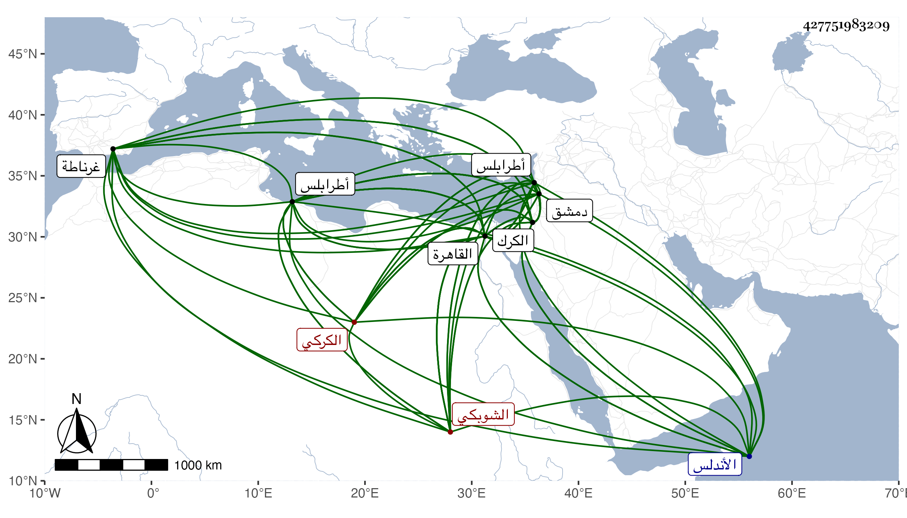

0902Sakhawi.DawLamic.ITO20230111-ara1.EIS1600.427751983209
Biography ID: 427751983209
1196
يوسف بن صفي جمال الدين الكركي الشوبكي بن الصفي والدموسي الماضي . كان أبوه من نصارى الكرك فتظاهر بالإسلام هو ووالد العلم داود ابن الكويز في كائنة للنصارى أشار إليها شيخنا في ترجمة داود سنة ست وعشرين من إنبائه وخدم هذا كاتبا عند العماد أحمد المقيري قاضي الكرك فلما وصل القاهرة كان في خدمته ببابه وابنه معه وكلاهما في هيئة مزرية حتى مات العماد فخدم الجمال عند البرهان المحلي بالكتابة فحسن حاله وركب الحمار وبعده توجه لبلاده وخدم بالكتابة هناك إلى أن ولاه المؤيد بسفارة قريبه العلم بن الكويز نظر جيش طرابلس فكثر ماله بها ، واتفق قدومه القاهرة في آخر أيام ابن الكويز فلما مات وعد بمال كثير حتى استقر في كتابة السر في شوال سنة ست وعشرين وكانت كما قال المقريزي أقبح حادثة رأيناها ولم يلبث أن عزل في ربيع الآخر من التي تليها بالهروى . قال المقريزي : وأذكرتني ولايته بعد ابن الكويز قول أبي القسم خلف بن فرج الألبيري المعروف بالسمير وقد هلك وزير يهودي لباديس بن جينويه الحميري أمير غرناطة من بلاد الأندلس فاستوزر بعد اليهودي وزيرا نصرانيا :
| كل يوم إلى ورا | بدل البول بالخرى فزمانا تهودا وزمانا تنصرا |
| وسيصبو إلى المجو | س إن الشيخ عمرا |
واستمر الجمال بعد صرفه بالقاهرة إلى أن ولي نظر جيش دمشق في ثامن جمادى الآخرة سنة اثنتين وثلاثين عوض الشريف الشهاب أحمد بن عدنان ، ثم عزل في ذي القعدة سنة خمس وثلاثين بالبهاء بن حجي ثم أعيد في صفر من التي تليها ثم انفصل عنها في جمادى الأولى سنة تسع وثلاثين واستقر في كتابة سرها عوضا عن النجم يحيى بن المدني ثم أعيد إلى نظر جيشها في جمادى الآخرة سنة إحدى وأربعين ثم انفصل في ربيع الآخر سنة ثلاث وأربعين ولزم داره حتى مات وقد عمر في ليلة السبت ثامن عشر رجب سنة ست وخمسين ، وكان بعيدا عن كل فضيلة ومكرمة ومن الجهل بمكان ولذا قال المقريزي ما قال ، وقد قال شيخنا في ترجمة العلم داود من إنبائه أنه استقر بعده في كتابة السر قريبه جمال الدين يوسف وكان قد قدمه في عهد المؤيد وقرره في نظر الجيش بطرابلس فاتفق أن الأشرف لما ولي نيابتها في أيام المؤيد تقرب إليه وخدمه فصارت له به معرفة فلما مات العلم قرره في وظيفته فباشرها قليلا بسكون وعدم شره وتلطف بمن يقصده وحلاوة لسان ثم صرف بعد قليل .
